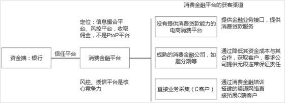

GROUP
QIANKANG
Qiankang Finance
Qiankang (Shanghai) Financial Information Service Co., Ltd. specializes in the operation and risk control for the personal credit business. Our advantages include the risk management, data......
MOREQiankang Info Tech
Qiankang Information technology Limted Co. specializes in system, management platform researches and operation of personal credit. Qiankang Group adheres to the belief that technology boosts firm's......
MOREQianKang JinFu
Qiankang finance( Beijing ) information technology limited co. ( abbreviated as Qiankang finance ( Beijing ) is founded on January 18th, 2016, which is a subsidiary of Qiankang finance information......
MOREGROUP
QIANKANG
Qiankang Finance
ompany Profile
Qiankang (Shanghai) Financial Information Service Co., Ltd. specializes in the operation and risk control for the personal credit business. Our advantages include the risk management, data mining and scene modeling. These advantages are obvious because we have already accumulated many experiences in project management and technology researches. Qiankang also achieved some honors in the past years. For instance, we are the partner of Agricultural Bank of China Alliance, MasterCard Asia Pacific, a large-scale consumption finance firm.
Qiankang
ervices
1, the micro-loan business and operation consulting:
Qiangkang company’s micro-loan consulting is based on the IPC micro-credit application technology and advanced operation experiences from many small banks. Qiankang formulate its micro-credit business system from past researches and experiences, which covers customer identification, risk control and the whole life cycle management. The company has innovated the management system of sales managers, the customer network maintenance mode, the efficient performance assessment method, and the management system of rewards and punishments to sales managers.


2, consulting and operation services in credit card business:
Credit card strategy consulting: we would perform a detailed analysis in the targeted bank’s markets and itself to develop its special credit card development strategy, which will be characteristic, clear and feasible. And then we would make a detailed plan and submit that plan to the board of bank for approval and support from them.
Organization structure and procedure consulting in credit cards: we would optimize organization structure and procedures of credit center by rebuilding or redesigning each position’s function. To improve the management of credit card center, we would help banks to scientifically allocate management resources to meet each regulation and reduce the management risk.
Credit card design consulting: the specific services include the content, brand and competitive products of credit card, application functions of credit card and IC, personal consumption loan, products with multi-characters and corresponding management procedures.
The comprehensive risk management consulting of credit card: we would help banks with managing the screening, approval, amount management and collection of credit card to develop a complete risk management system of credit card. More exactly, we would assist banks with allocating each position’s functions and monitoring credit card holders in the full-life cycle of credit card to improve the banks’ level of credit card risk management.
The credit center management and salesperson training: after developing a complete administration system, we will help banks to recruit, train, guide and assess employees , and make them be eligible.
The comprehensive operation strategy consulting: except above 5 consulting services, we could also provide banks with the practice services. It is also available for us to share gains or shoulder losses with serviced banks, which would make sure that banks could gain an stable revenue increase for the credit card business.


3, the training in personal credit business operation and marketing:
Qiankang would help banks to cultivate a elite group that are capable to seek for customers, perform the risk management and explore the market. Under the operation of this elite group, it would be achievable for banks to successfully expand the personal credit markets, and improve the bank’s competition and sustainable level.


GROUP
QIANKANG
Qiankang Information technology Limted Co.
ompany Profile
Qiankang Information technology Limted Co. specializes in system, management platform researches and operation of personal credit. Qiankang Group adheres to the belief that technology boosts firm’s development. At this moment, Qiankang Group already have an advanced personal credit management system, excellent technical team, practical application technology, powerful data mining and modeling.
Qiankang
oftware copyright

Handheld Terminal Marketing
management software V1.0

Financial credit assessment
Platform Software V1.0

Personal banking systems
management software V1.0

Small micro-loan management
software V1.0

Self-service device management
platform software

Bank of self-service equipment
platform software

Financial credit assessment
model software V1.0

Direct banking system backstage
operating platform
GROUP
QIANKANG
Qiangkang finance ( Beijing )
ompany Profile
Qiangkang finance ( Beijing ) information technology limited co. ( abbreviated as Qiankang finance ( Beijing ) is founded on January 18th, 2016, which is a subsidiary of Qiankang finance information service limited co. Qiankang finance ( Beijing ) covers the data based online credit assessment and risk control model for banks and other financial institutions. Strategy, business operation, technology, product design and practice consultation on the direct banking are also important parts of Qiankang finance ( Beijing ). It could utilize its mature technology to provide all services surrounding the whole life cycle of direct banking.
Qiankang
istory
Qiangkang finance ( Beijing )’s risk management platform is developed for banks’ consumption, supply chain, micro-loan credit and so on. It is to help banks with the credit risk evaluation and examination of normal borrowers, standardized products design and credit risk evaluation of personal credit. Except its risk management platform, Qiankang finance ( Beijing ) is with the purpose of establishing the standard procedures of consumption finance. It assists banks to start up the business of consumption finance by training staff and setting up the program of “consumer credit manager”.
Qiankang finance ( Beijing ) has been regarding the retail credit business as a significant part since its beginning, which accounts for a large proportion of micro-loan and credit card business. This is why Qiankang is capable of marketing, operating and performing anti-fraud in the retail credit business.
It is very hard for banks to perform the consumption finance because of its high requirement of little amount, rapid assessment and short duration. Qiankang finance ( Beijing ) has commenced the consumption finance since 2013, and gathered many professional talents and possessed core technologies , such as consumer obtaining by channels, risk management, anti-fraud and so on.
The number of consumption finance group is around 50 persons, some of who are from the elite of the top commercial banks and consumption finance firms or senior consultants from relevant consultation firms.
Some software products of consumption finance have been successfully produced. They include channel, marketing, risk management, collection and calling center system and so on, and are wide-spread applied and checked by financial institutions.
Qiankang Group has established links with around 50 city and rural commercial banks. Each member from the risk management group of Qiankang finance ( Beijing ) possesses vast experiences in credit, credit card and consumption finance.
It serves micro-loan and credit card operation consultation, micro-loan customer identification and risk management methods to 20 banks with over 5 years risk management experiences in bank credit. Based on past consultation services to bank, Qiankang finance ( Beijing ) has developed its particular customer identification system and risk management model. Bank could manage the credit risk before the approval of application, save a huge amount cost of human resources, and corresponding gain more profits. This is why banks would like to cooperate with us.


Qiankang
usiness
1. The consumption finance consultation
Qiankng finance ( Beijing ) serves banks with consumer credit consultation. The specific services is to make the business objective clear, standardize the institutions, design the application consumption scene, recruit and train staff, develop the consumption finance system, provide operation consultation and so on.
2. The credit sales managers training
Qiankang finance ( Beijing ) offer the program “credit sales managers in consumption finance” to employees in consumption finance firms or platforms, financial institutions and other fields. The high and middle level courses are already available at present, and it plans to increase online courses in this June. The first session is from April 9th to 13th in Beijing, the second session is from June 1st to 5th in Cenxi, and the third one would be initiated on the middle of June in Shanghai.
3. The risk management platform
Qiankang finance ( Beijing ) would integrate channel resources with bank funds and provide risk management services by its risk management platform. Right now, the services covered include consumption credit, micro-loan, credit card and so on. The particular rules of consumer credit is presented in the following.


 CHINESE
CHINESE QQ
QQ
Shanghai ICP for 13043724